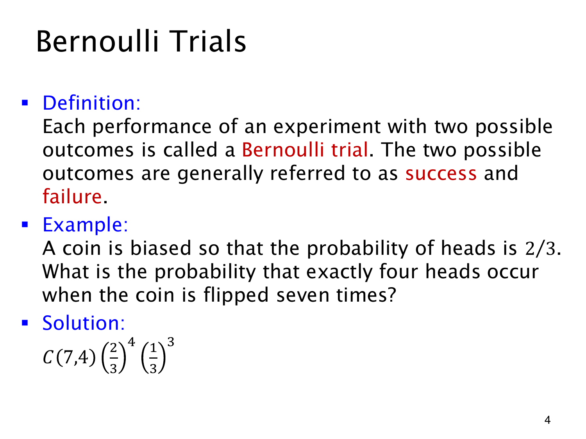

L1.11 · 第 4 页讲解原文
查看这一页课件

七次偏币中恰好四次正面
只有两个结果的一次试验称为 Bernoulli trial（伯努利试验）。成功、失败只是约定的名称，例如把正面称成功、反面称失败，不带价值判断。
设正面概率为 2/3，独立抛七次。某个指定的“四正三反”序列，例如 HHHHTTT，概率为
(32)4(31)3.
四次正面的位置却不必固定在开头。七个位置选四个有 (47)=35 种安排，各序列互斥而概率相同，所以
p(X=4)=(47)(32)4(31)3=2187560.
组合数计位置安排，幂次项计其中一种安排的概率。“恰好四次”不包括五、六、七次。
这个计算用独立性把各次概率相乘，又用相同的成功概率保证各四正三反序列同概率。只知道每次正面的边际概率为 2/3，没有独立性，推不出此式。